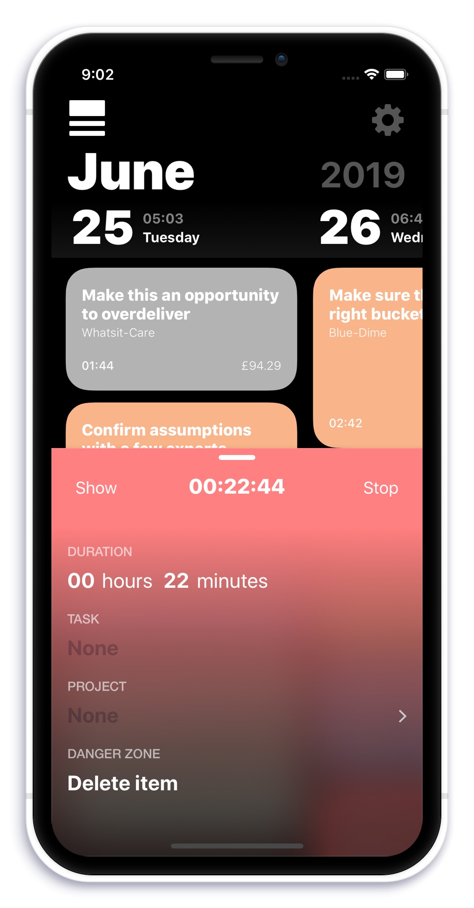

The most rewarding time tracker
What if you would actually want to use a time tracker because it gives you a feeling of achievement?
Make it yours. Choose a color theme!:
⛱️ Solar system
🏠 60's Wallpaper
🖍 Text Marker
🍦 Ice Cream
📝 Sticky Note
😷 Dust
Lights on or off?
🌝 Light Mode
🌚 Dark Mode
🤡 Twilight Mode
Now seriously: How on earth can a timetracker be fun?:
☝️ Succinct
Your day at a glance. Fill it up with colorful chunks. Longer task. Larger chunk. Colors differ by client.🐭 Frictionless
Simply start or stop your timer. Enter additional data whenever convenient or desired.📡 Ubiquitous
Syncs between all your iOS devices. Also maintains an always up to date timesheet folder on your iCloud drive.🌻 Friendly
Busydays makes time tracking a pleasant experience. No dreadful lists. Also: Emojis and dark mode!More features than you can throw a stick at ...:
📅 Monthly calendar
Provides an instant overview of how much time you spent on which project. Everything visible in the calendar can be exported as spreadsheets.🏃♂️ Instant timers
A timer is ready to run in a split second. Just press start. Enter additional data whenever convenient or desired.⏱ Tasks
Busydays tracks the amount of time spent on tasks you create. Making new tasks takes one tap. If desired theses task may be assigned to projects and clients at a later time or before tracking time.📈 Projects
All your time tracking records can be assigned to projects. This step is optional but unlocks more administration options.📇 Clients
Projects may be assigned to clients if desired in order to group them visually. Each client gets its unique color.
